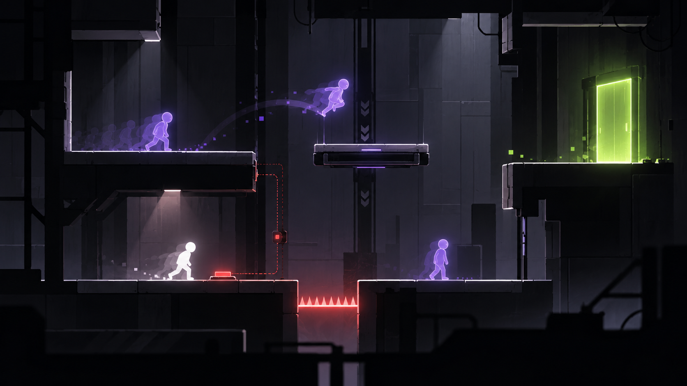

01 — ATTEMPT
→
Try the room
Move, jump, trigger switches and test a route through the puzzle.
Every mistake stays behind. Use it. A failed run becomes a ghost that repeats its recorded actions. Later attempts can use that timing to open routes, hold switches and reach the exit.

The next attempt can plan around the recording from the previous one.
Move, jump, trigger switches and test a route through the puzzle.
Resetting leaves behind an echo that repeats exactly what you did.
Time the next run around the echoes already in the room and combine their actions to finish the puzzle.
Every attempt records the player's actions. On reset, that recording becomes a deterministic echo inside the room.
The rule is visible in a short sequence: one run records an action and the next run plans around it. Switches, moving platforms and hazards change how those recordings can be used.
Resetting keeps the previous attempt as a replay ghost that can be used in the next route.
Past versions can hold switches, trigger hazards and create openings for the live player.
Rooms are designed to be retried quickly, so the player can test a timing and immediately adjust it.
Moving platforms, timed doors and hazards can be added while the replay rule stays the same.
The first build needs movement, instant reset, replay recording and three compact rooms. The test is simple: can players work out the rule and deliberately create a useful ghost?
Echoes of Failure is an early student project by Pablo Vicente Rozalén Fernández and Doménec Gregori Esteve. The planned greybox will focus on movement, reset, replay accuracy and whether the puzzles remain readable with several ghosts on screen.